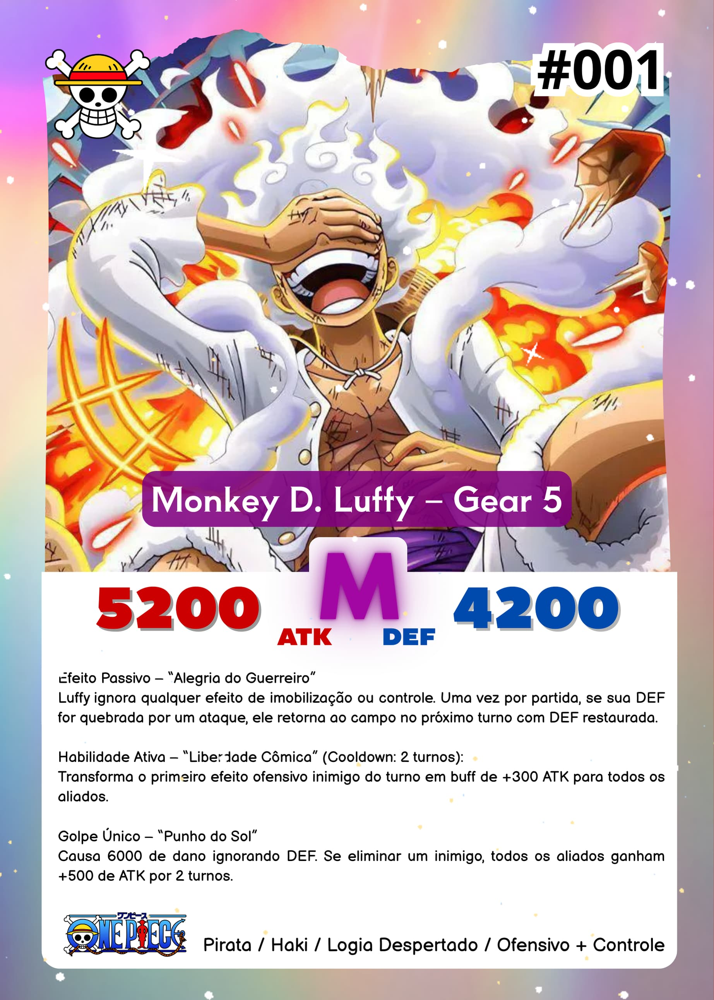
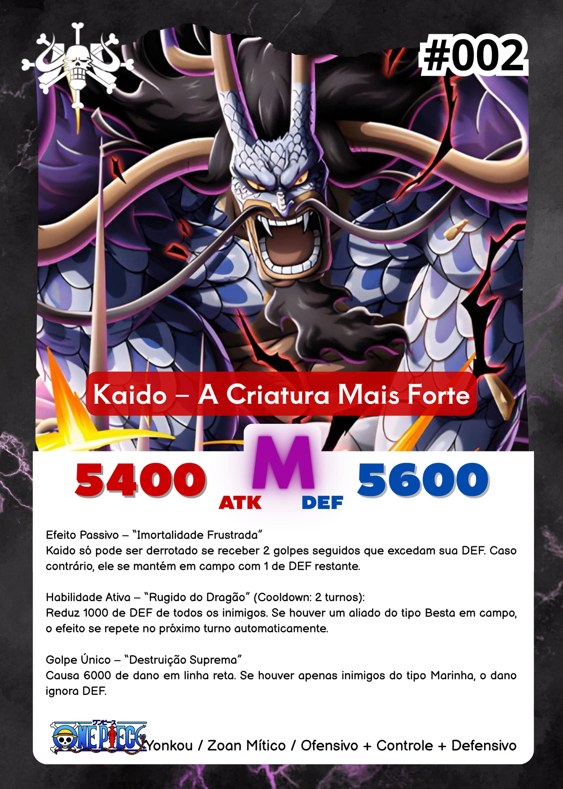
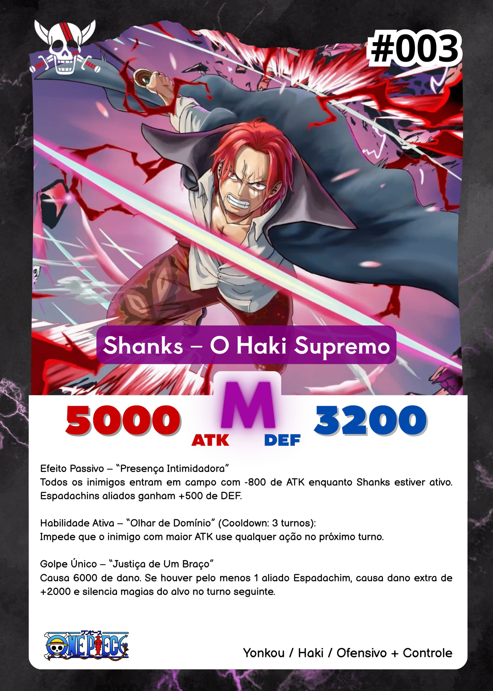
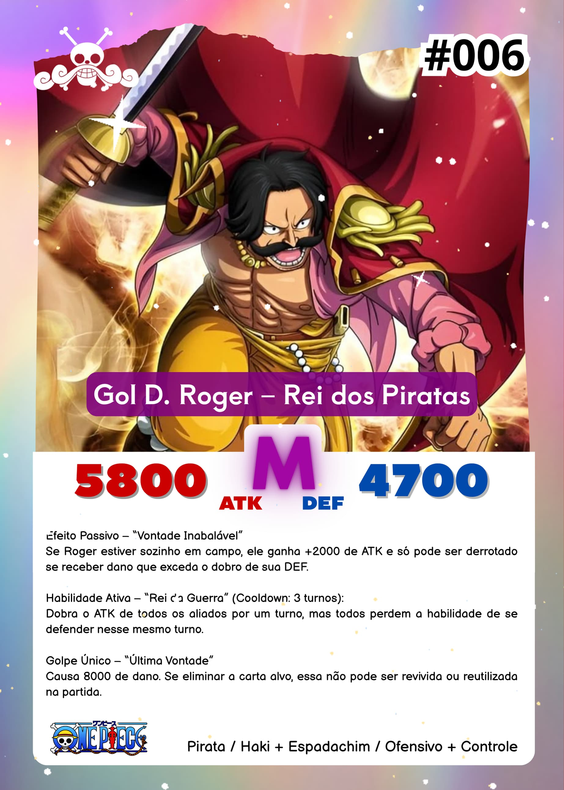
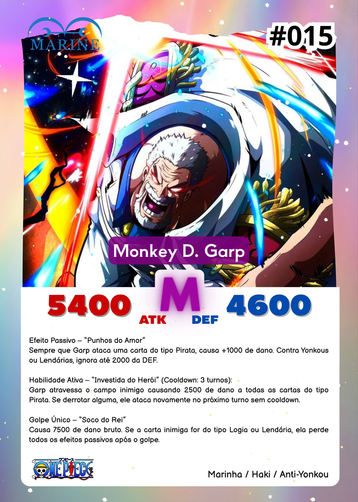
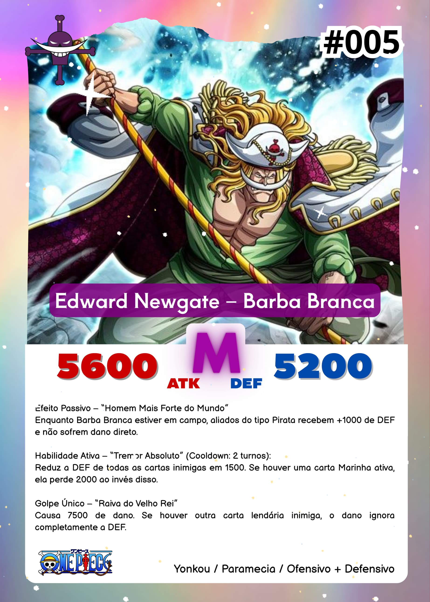

Bem-vindo ao meu projeto de cards do universo One Piece!
Esse site é um experimento pessoal, feito apenas para fins de aprendizado e testes.
Não está associado à Toei Animation, Eiichiro Oda, Shueisha ou qualquer empresa detentora dos direitos da
obra.
Este é um site pessoal onde organizo e exibo algumas cartas criadas com base em personagens, magias e
elementos do mundo de One Piece.
Tudo aqui é feito como exercício de programação, design e estruturação de pastas.
Nenhuma imagem ou personagem me pertence. Todos os direitos são reservados aos seus respectivos
criadores.
🎴 Categorias de Cartas
As cartas estão organizadas nas seguintes categorias:
Personagens: Cartas com os personagens icônicos do anime/mangá.

Magias: Golpes, técnicas e ataques especiais.

Suportes: Buffs, curas ou cartas que ajudam sua estratégia.

Debuffs e Contra-ataques: Cartas que atrapalham o oponente ou reagem a ataques.

Essas são algumas das cartas que montei com mais carinho visual:






×

Esses cards são apenas representações gráficas, sem uso comercial ou distribuição.
Nota do Criador
Este site é um projeto de fã, feito apenas para fins de estudo e prática em desenvolvimento web.
Não há fins comerciais, monetização ou qualquer tipo de venda envolvida.
Todo o conteúdo de One Piece pertence à Toei Animation, Eiichiro Oda, Shueisha e seus licenciadores.
Se você chegou aqui por acaso: aproveite e veja como estou aprendendo a codar com base em algo que eu
gosto.
Créditos e Contato
Desenvolvimento, organização e design por Luan
Este projeto foi criado como parte do meu aprendizado em desenvolvimento web, com foco em React,
Tailwind e
organização de componentes.
Sou apenas um fã de One Piece usando elementos da obra para fins de estudo. Nenhum conteúdo aqui é
oficial,
nem comercializado.
Se você representa algum dos detentores de direitos e deseja que algo seja removido, por favor, entre em
contato.
Um agradecimento especial a Eiichiro Oda, por criar o universo de One Piece — uma obra que inspira,
diverte e emociona milhões de pessoas no mundo todo.
Obrigado também à Toei Animation e à Shueisha, responsáveis por levar essa jornada tão longe.
Este projeto é apenas uma forma de homenagear algo que sempre admirei.
Não é oficial, nem comercial. É só um espaço pessoal, feito com respeito e carinho por um fã que cresceu
acompanhando essa aventura.